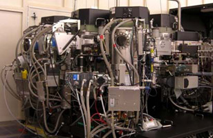
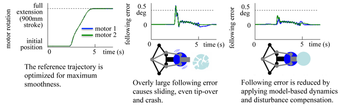

Control of Vacuum Wafer Handling Robot
Motivation and Approach
Wafer handling robots are used to transport wafers inside the vacuum environment of IC
fabrication tools. Major concerns for the robot performance are:
- Speed and acceleration: Fast motion is desired to reduce production time, however, the wafer is placed on the end-e ffector of the robot without any fixture. Friction is the only force preventing sliding so acceleration has to be limited to avoid sliding.
- Accuracy of tracking and positioning: the reference trajectory is designed to be smooth to avoid sliding. It is important to reduce tracking error to ensure the smoothness of the motion.
- Vibration and oscillation may cause the sliding of wafers, which generates contaminating particles and even leads to wafer tip-over.
|  |  |
 |
| An IC fabrication tool | The wafer handling robot inside an IC fabrication tool | |
Our research aims at improving the robot control performance in above aspects. Meanwhile, the robustness, ease of implementation, and ease of tuning shall also be fully considered. Major approaches include:
- Model-based dynamics compensation.
- Controller tuning using distributed auxiliary sensing.
- Disturbance compensation based on adaptive modeling and identi cation.
Main Results
With the proposed approaches, the reference trajectory can be optimized for maximum smoothness, and the following error is signi cantly reduced by model-based dynamics and disturbance compensation.

Recent Key Publications
- X. Yu, C. Wang, Y. Zhao, and M. Tomizuka, "Dynamics Modeling and Identi cation of a Dual-blade Wafer Handing Robot," in Proceedings of the Sixth ASME Dynamic Systems and Control Conference (DSCC), 2013
- C. Wang, X. Yu, and M. Tomizuka, "Fast Modeling and Identi cation of Robot Dynamics using the Lasso," in Proceedings of the Sixth ASME Dynamic Systems and Control Conference (DSCC), 2013
Researchers
| Cong Wang | Graduate student | ||
| Xiaowen Yu | Graduate student |